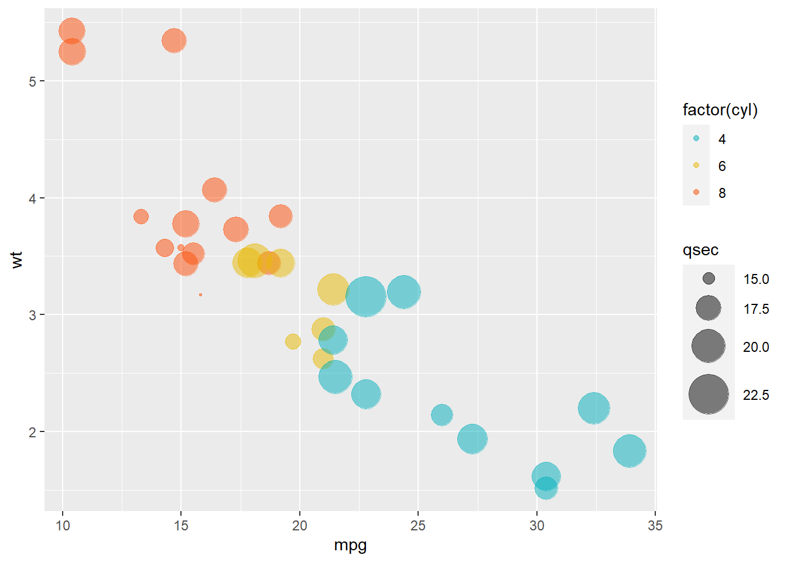

11 Criando Gráficos no R
A comunicação dos resultados talvez seja a parte mais importante do trabalho de um cientista de dados. Digo isso porque sem apresentar seus resultados de forma eficiente e clara, todo o trabalho desenvolvido é inútil.
A visualização de dados, representada por gráficos, é praticamente indispensável em qualquer apresentação de um projeto desenvolvido por um Cientista de Dados.
Certamente as cores e os tamanhos das barras, colunas ou qualquer outra representação vão facilitar muito o entendimento da mensagem que você deseja apresentar.
E posso te garantir que somos extremamente bem servidos quando o assunto é visualização de dados com a linguagem R.
Existe uma grande quantidade de bibliotecas que podemos usar para fazer gráficos realmente muito bonitos, claros e que irão surpreender os leitores de seus relatórios ou dashboards.
Não é o objetivo desse e-book falar sobre todas essas bibliotecas, mas vou citar aqui as minhas favoritas:
- ggplot2
- plot.ly
- googleVis
- rCharts
- leaflet
Dentre as 5 possibilidades aqui citadas, destaco a primeira: ggplot2. Iremos aprofundar mais nessa biblioteca pela quantidade de possibilidades que ela nos traz.
Usando a biblioteca ggplot2 você irá conseguir fazer praticamente todos os tipos de gráficos disponíveis e com enorme capacidade de customização do seu gráfico.
A medida que você for dominando a linguagem R, sugiro que também explore outras bibliotecas. Muitas vezes as bibliotecas plot.ly, googleVis e rCharts irão te possibilitar a criação de gráficos mais chamativos do que a biblioteca ggplot2.
Eu costumo escolher a biblioteca que irei usar de acordo com o gráfico que desejo fazer.
A biblioteca leaflet, por exemplo, é específica para a construção de mapas interativos.
11.1 Criando gráficos com a biblioteca ggplot2
Os gráficos da biblioteca partem de uma ideia bem simples:
Todos os gráficos podem ser construídos com 3 elementos:
- O conjunto de dados
- Um sistema de coordenadas
- As marcas de representação visual (linhas, colunas, pontos, etc)
Na prática, veremos como podemos criar um gráfico simples e depois ir aperfeiçoando e personalizando de acordo com a nossa necessidade. Esse aperfeiçoamento acontece com novas linhas de código, que são acrescentadas ao gráfico que já foi criado.
Instalando o pacote ggplot2:
11.1.1 Seu primeiro gráfico
O código a seguir é dividido com os 3 elementos que citamos acima. O primeiro elemento é o conjunto de dados mtcars. Dataset que contém informações de diferentes modelos de carros.
O segundo elemento está dentro da função aes(), que é usada para definir a estética do gráfico (abreviação para aesthetics - estética em inglês).
Nesse elemento, definimos os eixos do gráfico. O gráfico irá mostrar a relação entre duas variáveis. A variável mpg (miles per gallon - Milhas percorridas para 1 galão de combustível) e wt (Weight - peso do carro).
A variável mpg será alocada no eixo x (horizontal) e a variável wt no eixo y (vertical).
O terceiro elemento são as marcas de representação visual do gráfico e são definidos pela função geom_point().
Como nesse exemplo não há nenhuma customização, a função geom_point() será vazia.

11.1.2 Incrementando o gráfico
Podemos incrementar um pouco o nosso gráfico adicionando uma terceira variável. Vamos adicionar a variável cyl, que representa o número de cilindros do carro.
Agora, com 3 variáveis, o gráfico continuará sendo bi-dimensional. Porém, os pontos do gráfico serão coloridos de acordo com a variável cyl.
Antes de criarmos o gráfico, segue uma consideração: a variável cyl está classificada como numérica.
## [1] "numeric"Os carros desse dataset possuem 4, 6 ou 8 cilindros. Então, nesse caso será mais interessante tratar a variável cyl como categórica. Essa pequena alteração fará muita diferença na visualização dos dados, pois irá colorir cada uma das categorias com cores totalmente distintas.
Caso se considerasse a variável cyl como numérica, as cores de cada quantidade de cilindros sofreriam alterações apenas no tom da cor, dificultando a visualização de cada um dos grupos.
Para tratar a variável cyl como categórica, vamos apenas adicionar a função factor() ao inserir a variável na criação do gráfico.

Então, nesse último colocamos duas variáveis nos tradicionais eixos x e y - mpg e wt, respectivamente. Além disso, colorimos os pontos do gráfico de acordo com a quantidade de cilindros de cada carro.
E se precisássemos adicionar mais informações a esse gráfico?
11.1.3 O Gráfico de Bolhas - Bubble Chart
Além dessas 3 variáveis, se usarmos o gráfico de bolhas, poderemos adicionar uma 4ª variável ao nosso gráfico sem comprometer a sua qualidade.
Então, a variável mpg será representada pelo eixo x, a variável wt pelo eixo y, a quantidade de cilindros será destacada por cores diferentes de cada bolha.
A quarta variável escolhida é a qsec, que mede quantos segundos o carro precisa para alcançar 0,25 milhas.
Em nosso gráfico, a variável qsec será representada pelo tamanho da bolha.
Cada bolha é um ponto do gráfico e representa um carro do conjunto de dados.
ggplot(mtcars, aes(mpg, wt))+ #definição de qual é o dataset e quais são as variáveis dos eixos x e y.
geom_point(aes(color = factor(cyl), size = qsec), alpha = 0.5) + #definição de qual variável será representada pela cor e qual será representada pelo tamanho das bolhas.
scale_color_manual(values = c("#00AFBB", "#E7B800", "#FC4E07")) + #definição das cores das bolhas.
scale_size(range = c(0.5, 12)) # Amplitude do tamanho das bolhas
Pelos dois últimos gráficos, há fortes indícios que quanto maior o peso do carro (wt), menor é a quantidade de milhas que ele consegue percorrer com um galão de combustível.
Além disso, parece haver uma relação entre a quantidade de cilindros e essas duas variáveis. Por exemplo, os carros com 4 cilindros parecem ser mais leves e rodar mais milhas com um galão de combustível.
11.1.4 O gráfico de correlação
Para verificar a correlação entre as variáveis, podemos simplesmente uma tabela com a correlação entre elas:
tabela_correlacao <- round(stats::cor(mtcars), 1) #a função round é usada para arredondar as casas decimais do resultado.
tabela_correlacao## mpg cyl disp hp drat wt qsec vs am gear carb
## mpg 1.0 -0.9 -0.8 -0.8 0.7 -0.9 0.4 0.7 0.6 0.5 -0.6
## cyl -0.9 1.0 0.9 0.8 -0.7 0.8 -0.6 -0.8 -0.5 -0.5 0.5
## disp -0.8 0.9 1.0 0.8 -0.7 0.9 -0.4 -0.7 -0.6 -0.6 0.4
## hp -0.8 0.8 0.8 1.0 -0.4 0.7 -0.7 -0.7 -0.2 -0.1 0.7
## drat 0.7 -0.7 -0.7 -0.4 1.0 -0.7 0.1 0.4 0.7 0.7 -0.1
## wt -0.9 0.8 0.9 0.7 -0.7 1.0 -0.2 -0.6 -0.7 -0.6 0.4
## qsec 0.4 -0.6 -0.4 -0.7 0.1 -0.2 1.0 0.7 -0.2 -0.2 -0.7
## vs 0.7 -0.8 -0.7 -0.7 0.4 -0.6 0.7 1.0 0.2 0.2 -0.6
## am 0.6 -0.5 -0.6 -0.2 0.7 -0.7 -0.2 0.2 1.0 0.8 0.1
## gear 0.5 -0.5 -0.6 -0.1 0.7 -0.6 -0.2 0.2 0.8 1.0 0.3
## carb -0.6 0.5 0.4 0.7 -0.1 0.4 -0.7 -0.6 0.1 0.3 1.0A tabela acima é muito informativa, porém, caso seja visualizada como um gráfico será muito mais fácil de compreendê-la.
Para criar um gráfico com a correlação entre as variáveis, precisaremos fazer uma pequena transformação na tabela acima.
A matriz será transformada em uma nova tabela com 3 colunas: duas colunas com os nomes das variáveis e a terceira coluna com o valor correspondente da correlação entre elas.
Para isso, usaremos a biblioteca reshape2 e a função melt:
# install.packages("reshape2") #caso vc não já tenha instalado a biblioteca reshape2, precisa executar essa linha.
library(reshape2)
melted_tabela_correlacao <- melt(tabela_correlacao)
head(melted_tabela_correlacao)## Var1 Var2 value
## 1 mpg mpg 1.0
## 2 cyl mpg -0.9
## 3 disp mpg -0.8
## 4 hp mpg -0.8
## 5 drat mpg 0.7
## 6 wt mpg -0.911.1.5 Aperfeiçoando o gráfico
Os gráficos facilitam muito a visualização dos dados. Porém, com mais um pouco de esforço, podemos melhorar muito a visualização desses dados.
tabela_correlacao[lower.tri(tabela_correlacao,diag = T)]<- NA ## selecionar apenas a parte superior da matriz (evitando informações repetidas)
head(tabela_correlacao)## mpg cyl disp hp drat wt qsec vs am gear carb
## mpg NA -0.9 -0.8 -0.8 0.7 -0.9 0.4 0.7 0.6 0.5 -0.6
## cyl NA NA 0.9 0.8 -0.7 0.8 -0.6 -0.8 -0.5 -0.5 0.5
## disp NA NA NA 0.8 -0.7 0.9 -0.4 -0.7 -0.6 -0.6 0.4
## hp NA NA NA NA -0.4 0.7 -0.7 -0.7 -0.2 -0.1 0.7
## drat NA NA NA NA NA -0.7 0.1 0.4 0.7 0.7 -0.1
## wt NA NA NA NA NA NA -0.2 -0.6 -0.7 -0.6 0.4library(reshape2)
dados_correlacao <- melt(tabela_correlacao,na.rm = T) #transformando os dados para as 3 colunas como anteriormente.
head(dados_correlacao)## Var1 Var2 value
## 12 mpg cyl -0.9
## 23 mpg disp -0.8
## 24 cyl disp 0.9
## 34 mpg hp -0.8
## 35 cyl hp 0.8
## 36 disp hp 0.8library(ggplot2)
ggplot(data = dados_correlacao, aes(Var2, Var1, fill = value))+ #seleciona os dados e as variáveis para cada eixo, assim como a variável que determina a cor (value).
geom_tile(color = "white")+ #definindo a cor do contorno de cada quadrado.
scale_fill_gradient2(low = "blue", high = "red", mid = "white", #definindo a escala de cor das correlações
midpoint = 0, limit = c(-1,1), space = "Lab", #definindo a escala das correlações
name="Coef. Correlação") + #definindo o nome da legenda.
theme_minimal()+ #tema de fundo do gráfico
coord_fixed() + #mantém as coordenadas e as mediadas dos quadrados fixos.
labs(x = "nome eixo x", y = "nome eixo y") #define o nome para o eixo x e para o eixo yFique tranquilo que você não precisa decorar as funções acima. É importante que você leia e entenda o que cada uma está fazendo, só isso. E isso vai acontecer aos poucos, com a prática.
Digo que você não precisa decorar porque são infinitas possibilidades e não faz sentido nenhum gastar energia decorando isso. Basta que você pesquise no Google sobre o gráfico que deseja fazer e escolha o melhor para o seu caso.
Após encontrar na internet um código do gráfico que você deseja criar, basta fazer algumas adaptações para o seu caso.
Entendendo os comandos do gráfico acima: assim como nos outros gráficos do pacote ggplot2, temos o padrão de inserir os dados (dados_correlacao), depois definir as variáveis para os eixos x e y e o nome da variável que será colorida (aes(Var2, Var1, fill = value)). Os comandos seguintes são as marcas de representação visual e customizações do gráfico.
As mesmas estruturas acima podem ser utilizadas para todos os gráficos da biblioteca ggplot2, que possui diversos tipos de gráficos.


Vários mercados precisam de notícias em tempo real, imagine só o mercado de finanças:
- Uma decisão política, um resultado de uma grande empresa ou um acidente são fatores que geram um impacto enorme no mercado financeiro.
Isso faz que todos os envolvidos fiquem ligados o tempo inteiro em notícias.
Hoje em dia, na grande parte das vezes ficamos sabendo de notícias pelas nossas redes sociais. Isso porque as notícias mais relevantes são postadas e compartilhadas com muita velocidade.
O que também propicia essa velocidade é a informalidade e objetividade das redes sociais. É muito mais fácil escrever um tweet do que uma reportagem.
Entre todas as redes sociais, considero que o Twitter seja a rede social mais voltada para notícias. É uma rede social que está sempre vivendo a polêmica do momento.
E, no meu trabalho, não é diferente! Usamos muito o Twitter como meio de informação.
Meu trabalho é diretamente relacionado ao campeonato brasileiro de futebol e uma das maiores dores dos nossos clientes é justamente não estar 100% informado.
Eles precisam saber quem o técnico irá escalar na próxima partida. Essa informação nunca é divulgada de forma concreta com antecedência.
Então, a nossa principal fonte de notícias é o repórter que trabalha dentro do clube, que vive o dia a dia dos atletas e acompanha os treinamentos.
E todas as informações são divulgadas primeiramente no Twitter.
Porém, existem vários repórteres para cada time e, além disso, são postadas várias informações em seus perfis que não nos interessam.
Então, para resolver esse problema acima, o que eu fiz?
Criei uma lista com 90 repórteres que são destinados a acompanhar o dia a dia de clubes da Serie A do Campeonato Brasileiro.
Além disso, criei uma plataforma para ler as postagens e decidir se ela é interessante ou não para o fim que desejo.
Nessa plataforma, eu consigo ver o horário da postagem, quem postou, qual o time que ele acompanha, o texto da postagem, seu engajamento e também clicar para ir direto ao post.
Poderia ter sido criado um gatilho para definir se o post deveria ser retuítado ou não, por exemplo:
Compartilhar os tweets com maior número de curtidas
Compartilhar os tweets com determinadas palavras-chave
Compartilhar os tweets com mais compartilhamentos
Porém, como é a primeira versão da ferramenta, optei por deixar a opção de retweet com um gatilho manual. Alguém precisará clicar em no botão “RETWEET” para compartilhar o post.
Essa opção é até mais complexa para o nosso desenvolvimento aqui. Porém, acredito que será mais eficaz para evitar compartilhamentos indesejados.
Para o desenvolvimento da ferramenta, utilizei a integração com a API do Twitter usando a biblioteca rtweet.
Vou mostrar aqui quais foram as partes chaves no desenvolvimento da ferramenta:
11.1.6 PASSO 1 - ACESSO A API DO TWITTER
O tem uma ferramenta para facilitar a busca das informações que fazemos na plataforma deles, o que torna a tarefa mais fácil e rápida.
Caso você queira criar a sua própria busca, praticando no seu computador, terá que se cadastrar no Twitter como um desenvolvedor. É bem fácil e leva poucos minutos.
Aqui nesse endereço você tem todas as instruções: https://cran.r-project.org/web/packages/rtweet/vignettes/auth.html
library(rtweet)
#substitua os 4 valores seguintes pelos valores correspondentes ao seu login
# api_key <- "XXXXXXXXX"
# api_secret_key <- "XXXXXXXXX"
# access_token <- "XXXXXXXXX"
# access_token_secret <- "XXXXXXXXX"
## authenticate via web browser
token <- create_token(
app = "nome do seu app", #substituir
consumer_key = api_key,
consumer_secret = api_secret_key,
access_token = access_token,
access_secret = access_token_secret)11.1.7 PASSO 2 - BUSCAR OS TWEETS DE CADA REPÓRTER
O nome de usuário de cada repórter está na tabela setorista na coluna screen_name.
Então eu executo a função get_timeline para cada repórter e busco os 15 primeiros tweets.
Além disso, já escolho quais as variáveis eu desejo armazenar em cada busca, usando a função select.
11.1.8 PASSO 3 - VISUALIZAÇÃO DAS BUSCAS E O RETWEET
Esse é o resultado da ferramenta para escolher as informações que são úteis e devem ser retuítadas.

Ferramenta Retweet
Houve uma exceção nesse post e a ferramenta construída não foi disponibilizada na íntegra, pois ela permite que se faça posts no MEU Twitter.
Espero que entenda e aproveito para falar que caso tenha alguma dúvida ou precise de ajuda, estou à disposição.
Nesse post você vai aprender 5 formas diferentes de como filtrar os dados da sua tabela no R.
São várias as razões que você pode precisar filtrar os seus dados em uma análise de dados:
- Visualizar as 50 primeiras linhas da sua tabela
- Visualizar todos os registros que possuem um determinado valor para a variável X
- Excluir todos os registros que tenham a variável Y igual a 2, por exemplo…
- Ou até mesmo buscar uma amostra aleatória dos seus dados.
Porém, alguns métodos são mais adequados que os outros, dependendo do seu objetivo.
Então, vou falar aqui todas as 5 maneiras e quando usar cada uma delas.
Em nossos exemplos, vou usar o dataset iris que já é carregado automaticamente no R.
11.1.9 Filtro de dados pelas linhas e colunas
Essa a é a forma mais simples de selecionar dados do seu dataset. E, na minha opinião, deve ser usada com muita cautela.
O nosso dataset se chama iris, então quando escrevemos o comando
estamos selecionando as linhas de 1 a 30 do dataset iris.
Quando abrimos os colchetes depois do dataset, temos dois campos separados pela vírgula. Informamos quais as linhas que queremos selecionar antes da vírgula.
Depois da vírgula informamos quais as colunas queremos selecionar. Como deixei em branco, o R irá retornar todas as colunas do dataset.
Agora, se eu colocar o comando
O R irá retornar todas as linhas do dataset iris (pois o campo antes da vírgula está vazio) e irá selecionar as colunas 1, 3 e 5, pois essas foram as colunas que eu coloquei no vetor das colunas.
Você também pode combinar os critérios das linhas e colunas ao mesmo tempo. Desta forma, é possível até escolher até um único elemento contido na tabela. Por exemplo:
Caso você deseje saber qual o valor da 90ª linha para a coluna 5, o comando será o seguinte:
Mas porque eu disse que o método deve ser usado com cautela?
Porque, como você viu, ele é extremamente manual. Então, será útil caso você precise pesquisas ou explorações isoladas.
Mas, de forma alguma, recomendo que você use esse método para fazer alterações no seu banco de dados que precisem ser generalizadas para todos os dados.
11.1.10 Excluir dados pelas linhas e colunas
Para excluir determinadas linhas ou colunas, vamos usar o mesmo raciocínio do item anterior.
Vamos colocar o nome do dataset e os colchetes. Dentro dos colchetes iremos colocar na mesma ordem: primeiro as linhas e depois da vírgula colocamos as colunas.
Porém, como queremos excluir as linhas/colunas, iremos colocar um sinal de “-” antes dos números.
Por exemplo, se queremos excluir as linhas 10, 11 e 12 do dataset e excluir a coluna 4, o comando será:
E, da mesma forma, se queremos excluir linhas e colunas salteadas, colocamos os números dentro da função de vetor c().
Então, o comando acima retornou o dataset iris sem as linhas 10, 50 e 90 e também excluiu as colunas 1 e 3.
11.1.11 Filtro de dados combinando a função which()
Esse método, assim como os seguintes, já podem ser usados em grandes bases de dados de forma segura. Mesmo que você não veja ou conheça todas as linhas da tabela.
O filtro se aplicará por uma condição que vamos estabelecer.
Antes de aplicar o filtro, vou explicar rapidamente como funciona a lógica da função which().
A função which() irá retornar um vetor com o número das linhas que atendem a condição que você estabeleceu.
Por exemplo:
## [1] 51 52 53 55 57 59 64 66 69 72 73 74 75 76 77 78 87 88 92
## [20] 98 101 103 104 105 106 108 109 110 111 112 113 116 117 118 119 121 123 124
## [39] 125 126 127 128 129 130 131 132 133 134 135 136 137 138 140 141 142 144 145
## [58] 146 147 148 149O comando acima irá retornar todas as linhas do dataset iris que possuem um valor maior que 6 para a coluna Sepal.Length.
Se o comando irá retornar um vetor com todas as linhas que queremos escolher, podemos adaptar a função _which() no 1º método falado aqui e selecionar as linhas que precisamos.
Ou seja:
11.1.12 Filtro de dados usando a função subset()
Você vai perceber que a função subset() é bem intuitiva. Ela só precisa de 3 argumentos.
O primeiro argumento que você irá colocar na função é o nome do dataset.
Depois, você irá colocar a condição para cada linha que será filtrada.
E, por último, quais as colunas que devem permanecer no dataset que você está criando.
Vamos supor que a gente deseje montar um novo dataset chamado “setosa”.
Nele, vamos filtrar apenas os registros do dataset iris que tenham a variável “Species” igual a “setosa”.
Vou escolher também só as 3 primeiras colunas para o meu novo dataset.
OU
Caso você não queira excluir nenhuma coluna, não coloque o último argumento:
11.1.13 Filtrar usando a função filter() e select()
As funções filter e select fazem parte da biblioteca dplyr.
Esse pacote é essencial para manipulação de dados. Então, se você ainda tem ele no R, baixe agora mesmo usando o comando:
Para carregar o pacote, você precisar rodar o comando library(dplyr)
É importante saber que você irá usar o comando “filter” para filtrar as LINHAS e o comando “select” para selecionar as COLUNAS.
- Função filter()
Você precisa informar duas coisas para a função: -> Quais os dados você deseja usar (sua tabela) -> Quais as condições para filtrar os dados
Vamos filtrar aqui novamente de acordo com a variável “Species” do dataset iris.
Agora vou filtrar todos os registros da espécie “virginica”.
Bem simples! Mas e se a gente quiser combinar mais de uma condição?
Nesse caso, podemos usar dois operadores lógicos para combinar as condições: E e OU.
Caso a gente precise que as duas condições aconteçam ao mesmo tempo, usaremos a condição E (representada pelo &)
Caso a gente precise que aconteça uma condição OU a outra, usaremos a condição OU (representada pelo |) - nesse caso, só excluiremos caso não aconteça nenhuma das duas condições.
Vamos supor que precisamos filtrar os registros da espécie “versicolor” e que tenham a variável “Sepal.Length” maior que 6.
- Função select()
A função select é muito útil para escolher quais as colunas iremos manter em nosso dataset.
Assim como a função filter(), ela só precisa de dois argumentos.
O primeiro argumento também será o dataset que você irá selecionar as colunas.
O segundo argumento é a coluna que deseja selecionar. Claro que você pode querer selecionar várias colunas, não tem problema. Veja só:
Vamos selecionar as colunas Sepal.Length e Species do dataset iris.
Então esse comando irá salvar no “select_dataset” todas as linhas do dataset iris, mas apenas as colunas que você selecionou.
Espero que essas 5 formas de filtrar as linhas e colunas de seus datasets sejam bem úteis na sua manipulação dos dados e até a próxima! :)
Pronto! :)
Já enviei o e-book para o seu e-mail. Em poucos minutos ele estará lá.
Esse e-book foi criado para fazer diferença na sua carreira.
Aproveite bastante.
Luís Otávio
Já me segue no instagram? Tô sempre postando o que aprendo e desenvolvo como Cientista de Dados.
Opa! Muito obrigado pela sua mensagem!
Assim que der já vou dar uma olhada e te responder.
Clique aqui para voltar a navegar no Blog.
Quer ter certeza que você vai receber o e-mail que vou te enviar?
Adicione o e-mail contato@luisotavio.pro aos seus contatos!
Eu nunca vou te enviar SPAM, mas esse procedimento é importante para o seu e-mail saber disso!
Clique aqui para voltar a navegar no Blog.

Ebook para quem deseja iniciar a carreira de Ciência de Dados a partir do ZERO.
Ele irá te ensinar a programar em R - a melhor linguagem para você usar como Cientista de Dados.
Aqui eu coloco o conteúdo!